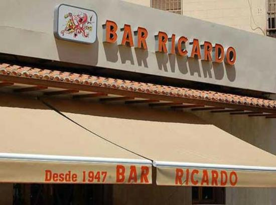
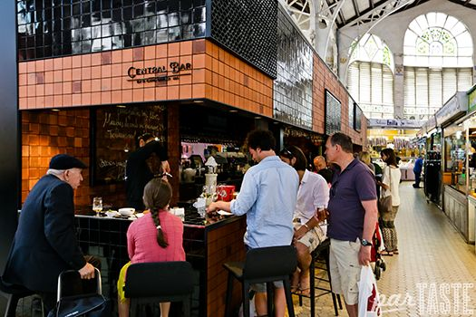
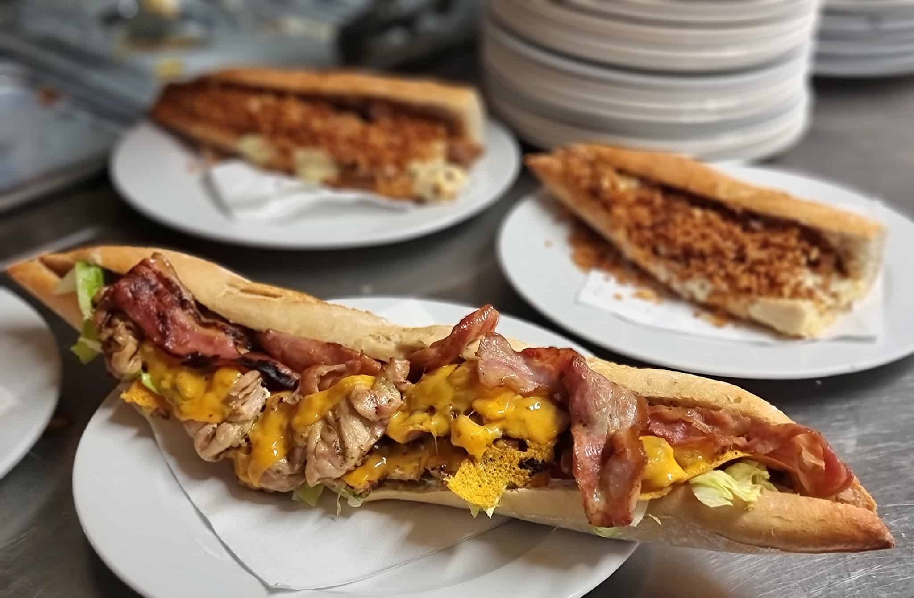

Bares

Bar Ricardo
Bar abierto desde 1947, con terraza y tapas tradicionales, especializado en exquisiteces de marisco.

Central Bar
Central Bar es el bar de Ricard Camarena en el Mercado Central de València. Bar bullicioso, dentro de un ornamentado mercado de abastos, que prepara tapas y bocadillos elaborados con productos locales.

Asador El Pastoret
Para los que tienen un estómago sin fondo, también hay bocadillos hechos a medida, como los XXL del Pastoret. Uno de los bares de Valencia que sirve bocadillos casi tan grandes como tu brazo.

La Pérgola
El bar más mítico de la Alameda, perfecto para reponer fuerzas con un almuerzo valenciano un sábado por la mañana tras un paseo por el río.